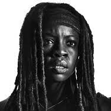
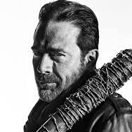

Rick Grimes

Maggie Greene
Maggie fue presentada inicialmente como una simple y rebelde muchacha de granja pero posteriormente evolucionó hasta convertirse en una verdadera mujer de acción. Aunque desde un principio demostró ser una persona independiente, ruda y físicamente fuerte, tras abandonar su zona de confort y adentrarse en el mundo barbárico, empezó a depender aún más de esas cualidades y se volvió una guerrera agresiva. A pesar de todo esto, Maggie además continuó siendo sensible y vulnerable - reflejado mayormente en su relación con Glenn y en su devoción hacia su familia - prefiriendo sin lugar a dudas vivir antes que solo sobrevivir.
Maggie nació del matrimonio de Hershel con Josephine, quien falleció cuando ella era aún una niña. Maggie creció en la granja con su familia y con el capataz de la hacienda Otis, y en una ocasión su padre la llevó a visitar las cataratas de Amicalola - la cascada más alta en Georgia. Cuando Maggie tenía 14 años, Hershel se volvió a casar con una mujer de nombre Anette, por lo que una rebelde Maggie se dedicó a fumar y a robar en las tiendas hasta que finalmente su padre se sentó a hablar con ella y le dijo que debían "amarse los unos a los otros". Maggie aceptó a Annette como un miembro de su familia y terminó queriéndola como a una madre. Maggie asistió a la misma escuela secundaria a la que iba Randall y tras graduarse, se inscribió en la universidad. En su primer verano de vuelta a casa, Maggie dejó sus maletas en su habitación y salió a montar a caballo, pero cuando regresó descubrió que Beth había estado hurgando entre sus cosas y había encontrado sus píldoras anticonceptivas. Maggie se sintió furiosa cuando Beth las arrojó con horror al estanque y aunque empezaron a discutir, eventualmente terminaron reconciliándose debido a que quedaron empapadas de lodo a causa del caballo de Maggie. Cuando se produjo el cambio en el mundo, los vecinos y algunos familiares de Maggie - específicamente su madrastra y hermanastro - cayeron víctimas de la infección zombie, pero Hershel se convenció - y de paso a sus hijas también- de que solo estaban enfermos y los encerró en un granero con la esperanza de que en un futuro se encuentre una cura para su condición. Posteriormente Maggie y su familia se atrincheraron en la granja, aunque en ocasiones ella solía viajar al pueblo para buscar los suministros que necesitaban.
Lauren Cohan nació en Filadelfia y vivió durante su infancia en el municipio de Cherry Hill (Nueva Jersey), antes de trasladarse al Reino Unido. Se graduó en la Universidad de Winchester/King Alfred's, donde estudió Drama y Literatura inglesa, antes de viajar con una compañía de teatro de la que fue cofundadora en la universidad. Lauren dividió entonces su tiempo y trabajó entre Londres y Los Ángeles, participando en varias películas así como en algunos proyectos no comerciales. Su debut en el cine fue en 2005 en la película Casanova como la hermana Beatrice. El año 2006, protagonizó la secuela de la película National Lampoon's Van Wilder, Van Wilder 2: Rise of Taj como Charlotte Higginson. Su siguiente rol fue en 2007 en la película Float. También apareció en la tercera temporada de la serie de televisión Supernatural, como Bela Talbot, una ladrona que ocasionalmente ayudaba a los hermanos Winchester. También tuvo un rol recurrente en la segunda temporada de The Vampire Diaries como Rose. En 2011, Cohan se unió al elenco recurrente de la segunda temporada de la serie de AMC, The Walking Dead, junto a Scott Wilson y Emily Kinney, interpretando a Maggie Greene. La serie está basada en la serie de cómics del mismo nombre creada por Robert Kirkman. En la tercera temporada, Lauren paso a ser parte del elenco protagónico del show

Daryl Dixon

Michonne
